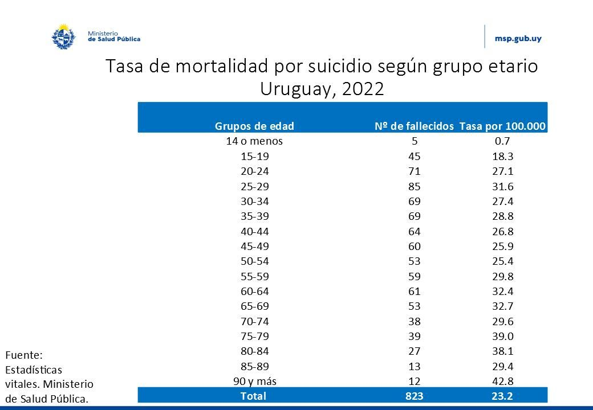

El suicidio es una manifestación de extremos problemas de salud mental. Tiene un alto impacto a nivel familiar, social, comunitario y económico. Según datos de la Organización Mundial de la Salud (OMS, 2021), más de 700.000 personas se suicidan cada año. Entre los jóvenes de 15 a 29 años, el suicidio constituye la cuarta causa de muerte a nivel mundial.
Según la publicación “Situación de bienestar psicosocial y salud mental en adolescentes y jóvenes de Uruguay” 6 de cada 10 adolescentes Uruguayos tiene algún síntoma de leve malestar en torno a su salud mental. 3 de cada 10 no tienen síntomas ni problemas de salúd mental y 1 de cada 10 manifiesta problemas severos de salúd mental que impactan en su vida cotidiana.
En el 2022, 23,2 de cada 100.000 personas en Uruguay, se quitaron la vida, esto conformó la cifra más alta registrada a nivel nacional y un aumento de casi el 50% desde 2010.
